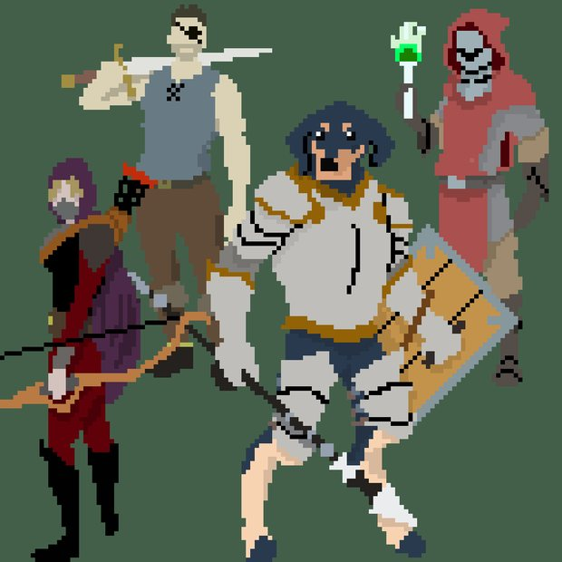
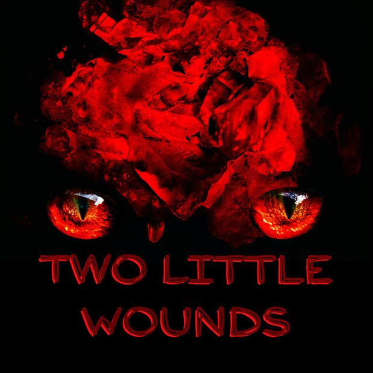
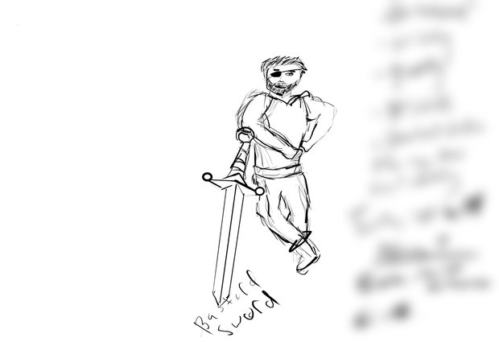
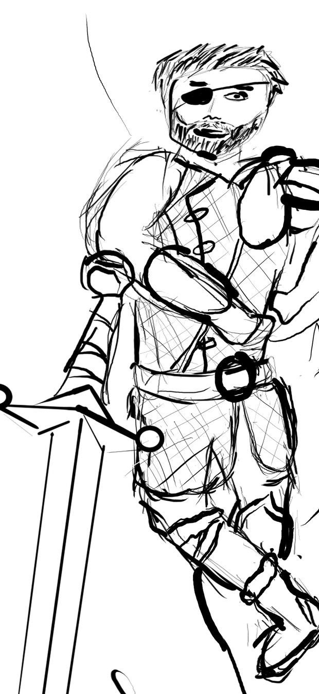
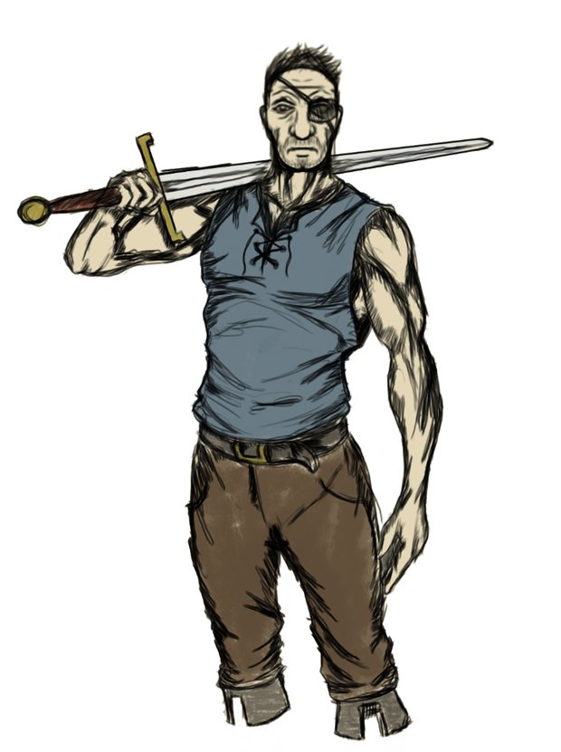
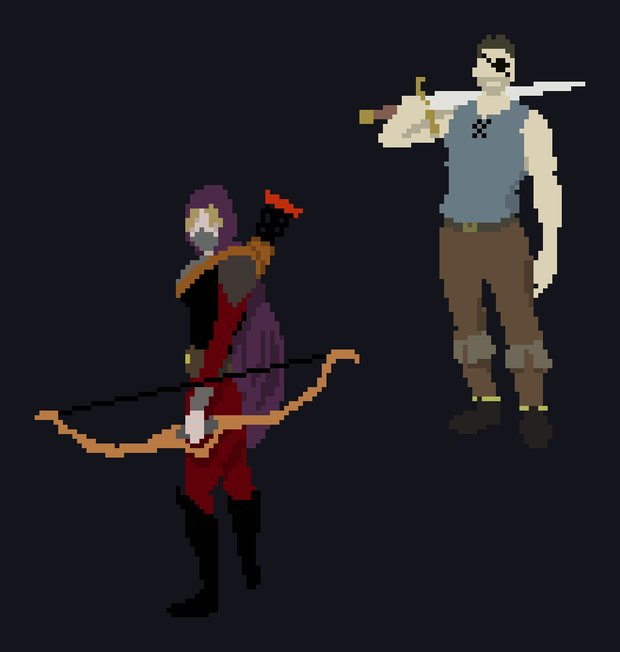
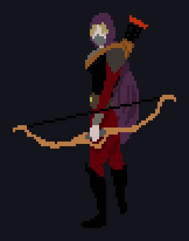
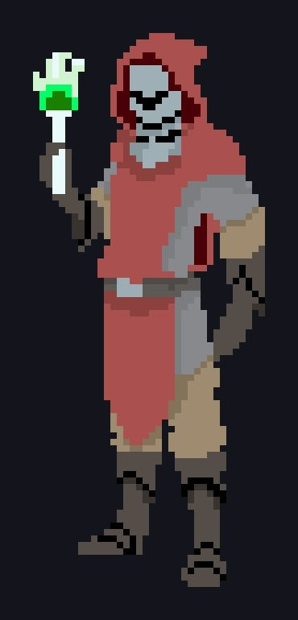
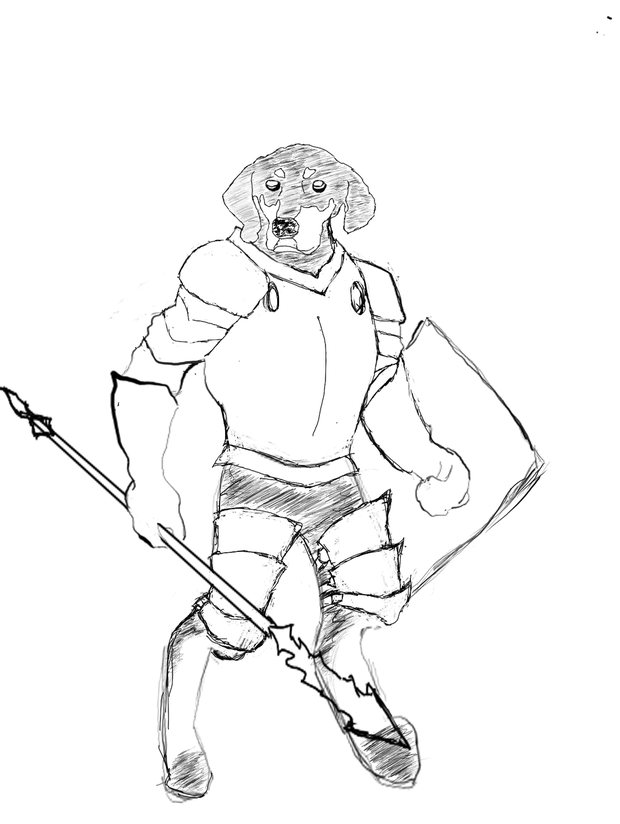
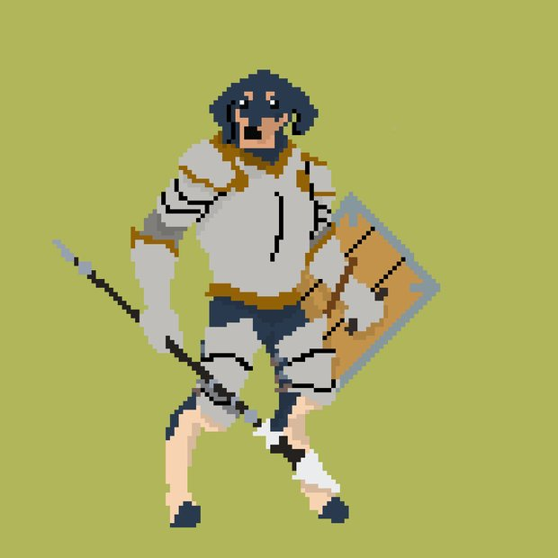

Game Overview

The Story
In the height of the Transylvania era, four unlikely monster hunters are dispatched by the League of Monster Hunters to bring down Dracula, the leader of the vampire. What starts as a hunt quickly spirals into something much larger and far more malevolent than anything our hunters bargained for.
Two Little Wounds blends dark fantasy lore with wit, clever bosses, and chaotic situations. The world is filled with monsters, demons, and creatures, each with their own place in the lore of this universe.
Gameplay
A 3D action-adventure brawler inspired by RPG-style combat depth and dungeon-crawler style progression, with the co-op flow of classic arcade games but built for a modern audience with fluid, responsive mechanics.
First Prototype
Gameplay footage from the original published 2D hack & slash demo.
Character Art & Design
The four heroes, from first pen sketch through to final in-game sprite.

Concept to Sprite — The Soldier
The Soldier started as a personality brief before he was a silhouette, then went through an armour pass working out what a career mercenary would actually wear. Design notes are obscured here; the finished sprite is at the end of the row.




The Rest of the Party




Ability & Combat Design
Excerpts from the combat design documents — how each character actually plays.
The Soldier — 2-Handed Sword
Melee bruiser • crowd control • high stamina cost
Combo Chain
- 1st hit — quick horizontal slice; the player can rotate mid-swing
- 2nd hit — vertical overhead strike with increased stagger
- 3rd hit — wide spinning cleave that catches multiple enemies in an arc
Charge Integration
Any strike in the chain can be charged by holding attack. The player keeps rotational control while charging, so a charged hit still feeds back into the combo instead of ending it.
Fianna the Bloodhowl — Boss
Anger-fueled warrior • multi-phase • one-handed axe
Phase 1 — Controlled Rage (100–70%)
Calm and methodical. She tests the player, mixing swift slashes with defensive parries while learning their patterns.
Warrior's Resolve
Fianna deflects incoming arrows with her axe, forcing the Stalker to stay mobile and hunt for openings rather than kiting safely at range.
Rage Strike
Below 80% health she begins heavy attacks that leave a shockwave, pushing enemies back and dealing area damage.
Each hero and boss has a full combat design document covering stats, combos, special abilities, and phase progression.
Development Story
From 2D Demo to 3D Universe
Two Little Wounds began as a 2D pixel-based hack & slash demo, which was released publicly and gathered meaningful feedback that pointed toward a bigger, more immersive vision. Based on that feedback, the project pivoted to a fully realized 3D dungeon-crawler with the same four heroes, the same story, and a game universe deep enough to carry a longer series.
Now in redesign, Two Little Wounds is being built alongside a World Bible covering the history of Transylvania, the League of Monster Hunters, all major factions, the bestiary of creatures, and the overarching narrative arc that spans the franchise.